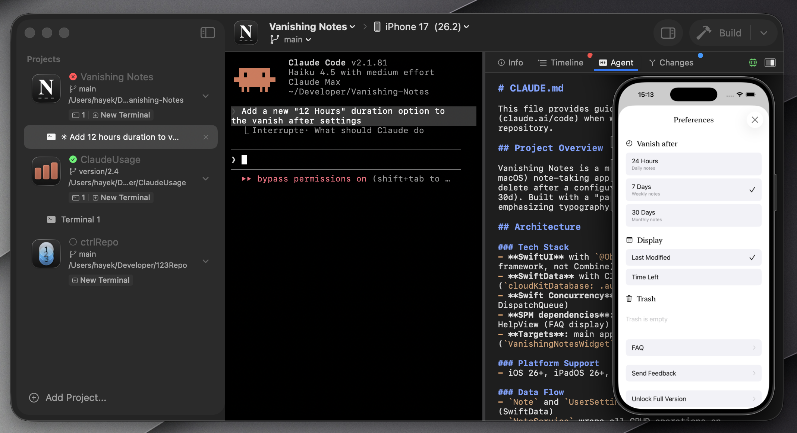
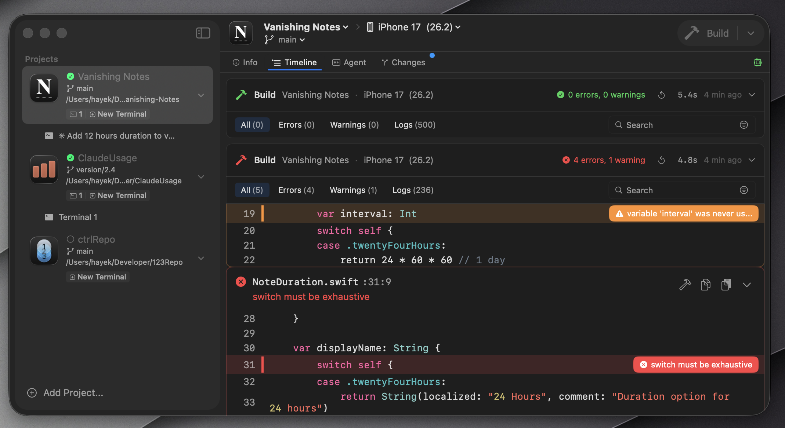
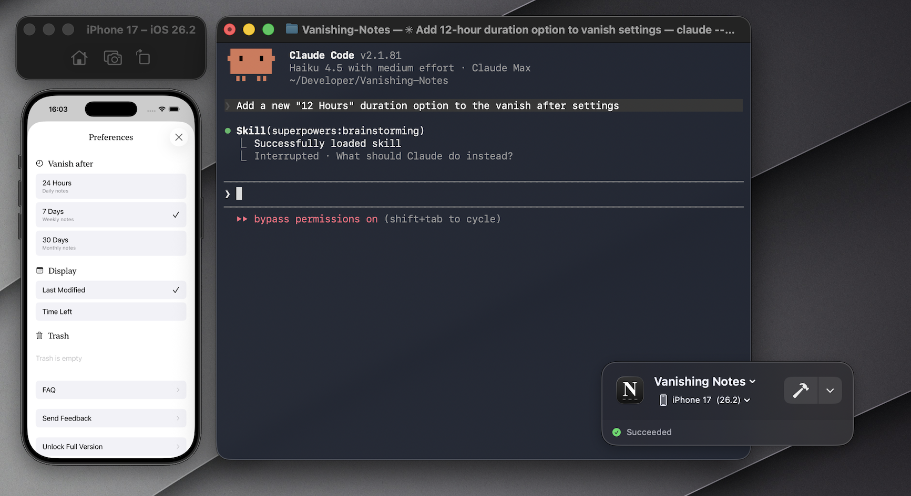

Work on multiple projects at once. In the AI era, developers don't work on single projects anymore. Xcode Neo brings all your projects into one unified workspace, letting you and your AI agents connect ideas across codebases and build better solutions, faster.


